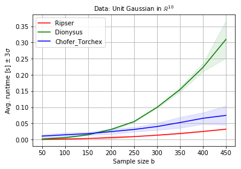

Comparison to SOTA¶
This notebook contains a comparison of the Vietoris-Rips (VR) persistent homology (PH) computation (on the GPU) implemented in chofer_torchex to the implementations available via dionysus and ripser (which is SOTA in terms of runtime).
This runtime study is a small-scale version of the runtime study in
Connectivity-Optimized Representation Learning via Persistent Homology
C. Hofer, R. Kwitt, M. Dixit and M. Niethammer
ICML ‘19
[4]:
import sys
[5]:
# UNCOMMENT THE FOLLOWING LINE IN CASE YOU WANT TO
# LOCALLY INSTALL RIPSER
!{sys.executable} -m pip install ripser
Requirement already satisfied: ripser in /scratch4/chofer/opt/anaconda/envs/pyt_1.0/lib/python3.7/site-packages (0.3.2)
Requirement already satisfied: numpy in /scratch4/chofer/opt/anaconda/envs/pyt_1.0/lib/python3.7/site-packages (from ripser) (1.15.4)
Requirement already satisfied: persim in /scratch4/chofer/opt/anaconda/envs/pyt_1.0/lib/python3.7/site-packages (from ripser) (0.0.9)
Requirement already satisfied: scipy in /scratch4/chofer/opt/anaconda/envs/pyt_1.0/lib/python3.7/site-packages (from ripser) (1.1.0)
Requirement already satisfied: Cython in /scratch4/chofer/opt/anaconda/envs/pyt_1.0/lib/python3.7/site-packages (from ripser) (0.29.2)
Requirement already satisfied: scikit-learn in /scratch4/chofer/opt/anaconda/envs/pyt_1.0/lib/python3.7/site-packages (from ripser) (0.20.1)
Requirement already satisfied: matplotlib in /scratch4/chofer/opt/anaconda/envs/pyt_1.0/lib/python3.7/site-packages (from persim->ripser) (3.0.2)
Requirement already satisfied: hopcroftkarp in /scratch4/chofer/opt/anaconda/envs/pyt_1.0/lib/python3.7/site-packages (from persim->ripser) (1.2.4)
Requirement already satisfied: cycler>=0.10 in /scratch4/chofer/opt/anaconda/envs/pyt_1.0/lib/python3.7/site-packages (from matplotlib->persim->ripser) (0.10.0)
Requirement already satisfied: kiwisolver>=1.0.1 in /scratch4/chofer/opt/anaconda/envs/pyt_1.0/lib/python3.7/site-packages (from matplotlib->persim->ripser) (1.0.1)
Requirement already satisfied: pyparsing!=2.0.4,!=2.1.2,!=2.1.6,>=2.0.1 in /scratch4/chofer/opt/anaconda/envs/pyt_1.0/lib/python3.7/site-packages (from matplotlib->persim->ripser) (2.3.0)
Requirement already satisfied: python-dateutil>=2.1 in /scratch4/chofer/opt/anaconda/envs/pyt_1.0/lib/python3.7/site-packages (from matplotlib->persim->ripser) (2.7.5)
Requirement already satisfied: six in /scratch4/chofer/opt/anaconda/envs/pyt_1.0/lib/python3.7/site-packages (from cycler>=0.10->matplotlib->persim->ripser) (1.12.0)
Requirement already satisfied: setuptools in /scratch4/chofer/opt/anaconda/envs/pyt_1.0/lib/python3.7/site-packages (from kiwisolver>=1.0.1->matplotlib->persim->ripser) (40.6.3)
[6]:
# UNCOMMENT THE FOLLOWING LINE IN CASE YOU WANT TO
# LOCALLY INSTALL DIONYSUS
!{sys.executable} -m pip install dionysus
Requirement already satisfied: dionysus in /scratch4/chofer/opt/anaconda/envs/pyt_1.0/lib/python3.7/site-packages (2.0.6)
[7]:
%matplotlib inline
import matplotlib.pyplot as plt
import numpy as np
from collections import defaultdict
# UNCOMMENT TO IMPORT RIPSER and DIONYSUS
from ripser import ripser
import dionysus as d
import torch
import time
from scipy.spatial.distance import pdist
from sklearn import datasets
#from chofer_torchex.pershom import pershom_backend
from chofer_torchex.pershom import vr_persistence_l1, vr_persistence
device = 'cuda:0'
Using /tmp/chofer_torch_extensions as PyTorch extensions root...
Detected CUDA files, patching ldflags
Emitting ninja build file /tmp/chofer_torch_extensions/pershom_cuda_ext/build.ninja...
Building extension module pershom_cuda_ext...
Loading extension module pershom_cuda_ext...
[8]:
def gen_random_10D_data(n):
return np.random.randn(n,10)
def gen_circlces(n):
return datasets.make_circles(n_samples=n, noise=0.05, factor=0.5)[0]
N = np.arange(50,400,50)
times = defaultdict(list)
f = gen_circlces
for n in N:
trials = defaultdict(list)
print('Evaluating N={}'.format(n))
for i in np.arange(50):
#Generate data
x = f(n)
D_l1 = pdist(x, metric='cityblock')
thr_l1 = np.max(D_l1.ravel())
X = torch.Tensor(x).to(device)
# Timing chofer_torchex
t0 = time.time()
l, _ = vr_persistence_l1(X.contiguous(),0, 0);
t1 = time.time()
trials['chofer_torchex'].append(t1-t0)
if 'ripser' in sys.modules:
t0 = time.time()
ripser(x, maxdim=0, thresh=thr_l1, metric='manhattan')
t1 = time.time()
trials['ripser'].append(t1-t0)
if 'dionysus' in sys.modules:
t0 = time.time()
dd = pdist(x, metric='cityblock')
filt = d.fill_rips(dd, 1, thr_l1)
m = d.cohomology_persistence(filt)
t1 = time.time()
trials['dionysus'].append(t1-t0)
times[n] = trials
Evaluating N=50
Evaluating N=100
Evaluating N=150
Evaluating N=200
Evaluating N=250
Evaluating N=300
Evaluating N=350
[9]:
methods = []
if 'ripser' in sys.modules:
methods.append('ripser')
if 'dionysus' in sys.modules:
methods.append('dionysus')
methods.append('chofer_torchex')
T = np.zeros((len(N),3))
S = np.zeros((len(N),3))
for j,(k,v) in enumerate(times.items()):
for i, method in enumerate(methods):
T[j,i] = np.array(v[method]).mean()
S[j,i] = np.array(v[method]).std()
[10]:
colors = ['red', 'green', 'blue']
plt.figure(figsize=(6,4))
for i, method in enumerate(methods):
plt.plot(N, T[:,i], label=method.title(), color=colors[i])
plt.fill_between(N, T[:,i]-3*S[:,i], T[:,i]+3*S[:,i], color=colors[i], alpha=0.1)
plt.legend()
plt.grid()
plt.xlabel('Sample size b')
plt.ylabel(r'Avg. runtime [s] $\pm$ 3$\sigma$')
plt.title(r'Data: Unit Gaussian in $\mathbb{R}^{10}$', fontsize=10)
plt.savefig('/tmp/normal10d_runtime.pdf', bbox_inches='tight')

Run a simple sanity check that all VR PH computations return the same result.
[11]:
# Sample data
x = f(200)
# Compute l1 distance matrix and get max. pairwise distance = threshold
D_l1 = pdist(x, metric='cityblock')
thr_l1 = np.max(D_l1.ravel())
# Run Ripser
dgm_ripser = ripser(x, maxdim=0, thresh=thr_l1, metric='manhattan')['dgms']
# Run Ours
X = torch.Tensor(x).to(device)
l, _ = vr_persistence_l1(X.contiguous(),0, 0);
# Run Dionysus
filt = d.fill_rips(D_l1, 1, thr_l1)
m = d.cohomology_persistence(filt)
dgms = d.init_diagrams(m, filt)
[12]:
assert(np.abs(dgm_ripser[0][:,1][:-1] - l[0].cpu().numpy()[:,1]).sum() < 1e-5)
assert(np.abs(sorted([x.death for x in dgms[0]])[:-1] - l[0].cpu().numpy()[:,1]).sum() < 1e-5)
assert(np.abs(dgm_ripser[0][:,1][:-1] - sorted([x.death for x in dgms[0]])[:-1]).sum() < 1e-5)